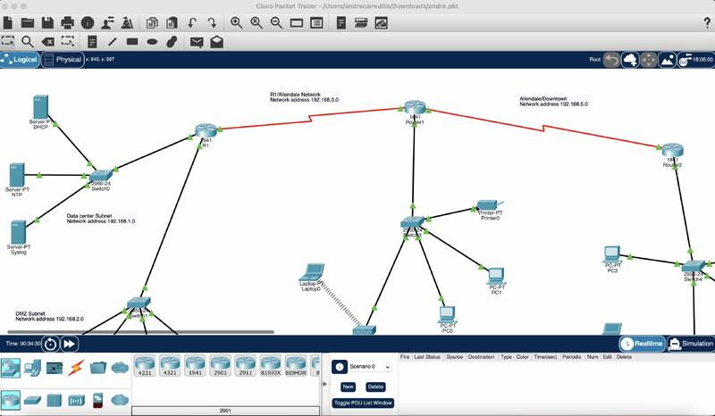

Multi-Site Network Design & Configuration (Cisco Packet Tracer)
Designed and implemented a simulated multi-site network infrastructure using Cisco Packet Tracer to model real-world enterprise networking environments. The project involved configuring routing, switching, and subnetting to enable secure and efficient communication between multiple locations.
I troubleshot network connectivity issues such as IP conflicts and misconfigurations, applying structured debugging methods to ensure reliability. This project strengthened my understanding of network architecture, device configuration, and troubleshooting in a controlled environment.
Key Tools & Technologies:
- Cisco Packet Tracer
- Routing & Switching
- Subnetting
- Network Troubleshooting